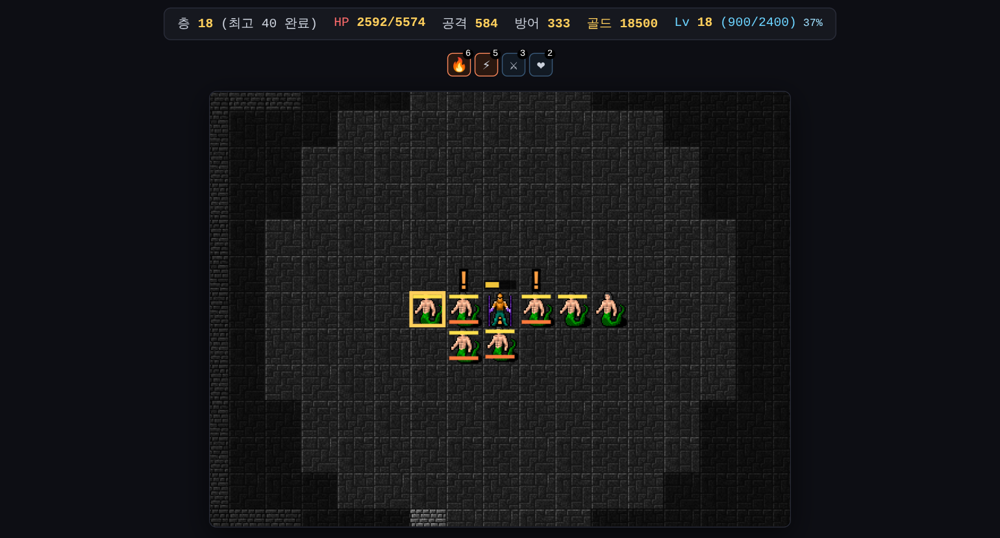
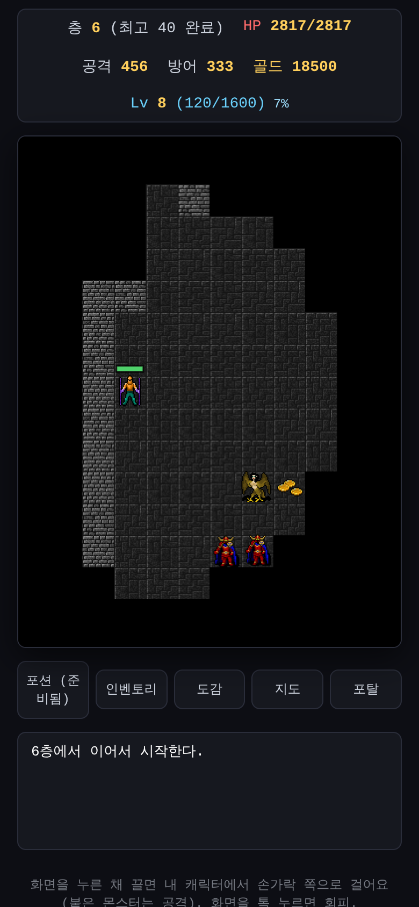
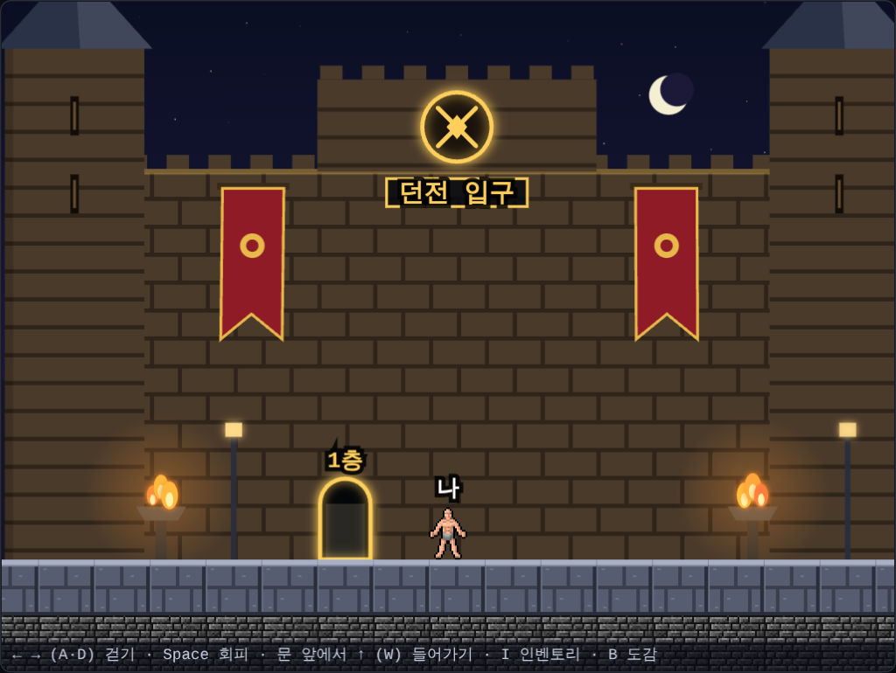
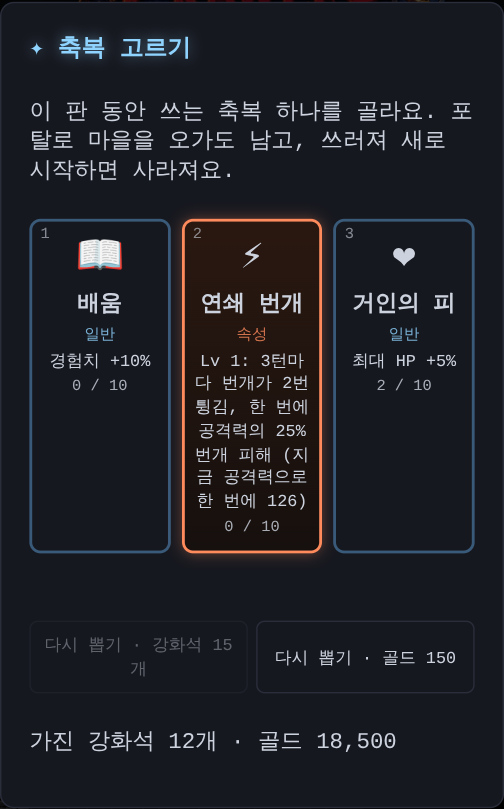

매 판 1층부터, 축복으로 키우는 브라우저 로그라이크
설치 없이 PC·휴대폰 브라우저에서 · 무료 · 게스트로 바로 시작 · 한국어·English·日本語


던전 크롤러는 매 판 레벨 1, 맨몸으로 1층에서 시작하는 로그라이크예요. 층마다 몬스터를 모두 쓰러뜨리면 다음 층으로 가는 계단이 열려요. 새 층에 내려갈 때마다 축복을 하나씩 고르고, 몬스터가 떨어뜨린 장비를 주워 강해져요. 나오는 축복이 매번 달라서 판마다 다른 캐릭터가 돼요. 쓰러지면 처음부터지만, 그만큼 한 판 한 판이 새로워요.
새 층에 내려가면 축복 3개 중 하나를 골라요. 공격력·HP·방어력, 경험치, 흡혈 같은 축복이 판 동안 쌓이고, 레벨이 오를 때마다 하나씩 더 골라요. 보스를 쓰러뜨리면 치명타·흡혈·속성 저항 같은 유물을 받아요. 마음에 안 들면 강화석이나 골드로 다시 뽑아요.
화염구 · 얼음 폭발 · 연쇄 번개 · 독구름은 축복으로 배워요. 같은 축복을 고를수록 피해·범위·횟수가 커지고, 한 번 배우면 지나간 자리에 불을 남기는 장화 같은 그 속성의 각성 스킬도 같이 키울 수 있어요. 한 판에 속성은 두 가지까지라 무엇을 키울지 골라야 해요.
장비는 줍는 순간 저절로 정리돼요. 더 좋으면 끼고, 같은 장비면 강화 +1, 나머지는 강화석으로 분해해요. 강화석은 +4까지 저절로 강화에 써요. 머리부터 반지 두 개까지 10부위, 커먼부터 레전더리·세트·유니크까지.
몬스터가 느낌표를 띄우면 강타가 오고, 원거리 몬스터는 붉은 자리를 노려요. 보고 회피(3칸 구르기, 그동안 무적)하면 맞지 않아요. HP가 낮으면 회복 구슬이 떨어지고, 층마다 한 번은 쓰러지기 직전에 버텨요. 기본은 실시간, 원하면 한 칸씩 움직이는 턴제나 1인칭 3D 화면으로도 해요.
정예·보스·네임드 몬스터를 쓰러뜨리면 아주 낮은 확률로 그 몬스터가 작은 펫이 돼요. 따라다니며 지도에 남은 경험치 구슬·골드·장비를 대신 주워 와요. 등급이 높을수록 멀리, 빨리 주워요. 이벤트 기간에 얻은 펫은 이벤트 모습 그대로예요.
가장 깊이 내려간 층과 그때 쓴 장비로 순위를 매겨요. 이메일 등으로 계정을 연결하면 진행 상황과 펫이 서버에 저장돼서 다른 기기에서도 이어서 해요.
일반 던전 50층 보스를 쓰러뜨리면 그 판 그대로(레벨·축복·유물을 들고) 다음 던전 1층으로 이어가요. 다음 던전은 이어가기로만 들어갈 수 있어요.


>)이 나타나요. 보스 층(5층마다)은 몬스터를 다 잡으면 보스가 부하들과 함께 나타나요.| PC | 이동 ←↑↓→ 또는 WASD (붙은 몬스터는 저절로 공격) · 회피 Space · 포션 Q · 포탈 P · 인벤토리 I · 도감 B · 지도 M Tab · 3D 화면 V · 실시간/턴제 T |
|---|---|
| 마을 | 걷기 ←→ · 문 앞에서 들어가기 ↑ |
| 휴대폰 | 화면을 누른 채 끌면 그쪽으로 걷고(붙은 몬스터는 공격), 톡 누르면 회피 · 아래 버튼으로 포션·인벤토리·도감·지도·포탈 |
개인 개발자가 AI 코딩 도우미 Claude와 함께 라이브 코딩으로 만들고 있어요. 무엇을 바꿨는지는 개발 블로그에 날마다 남겨요.